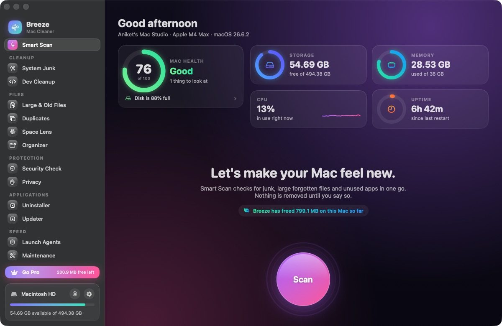
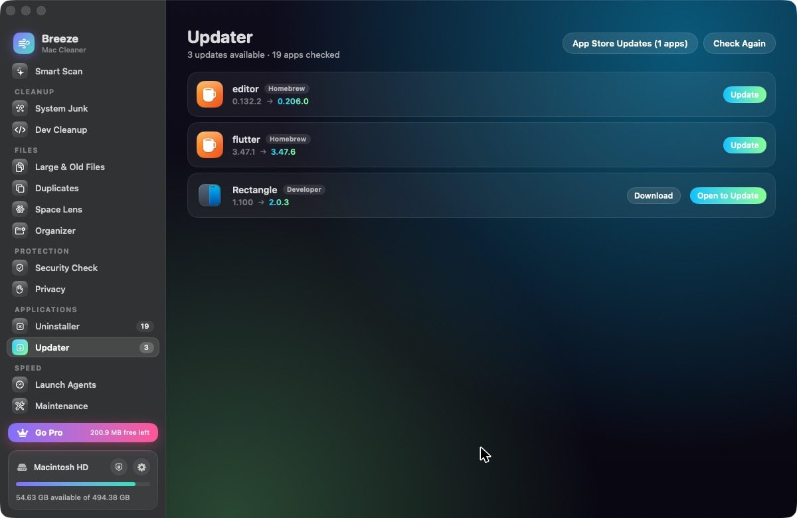
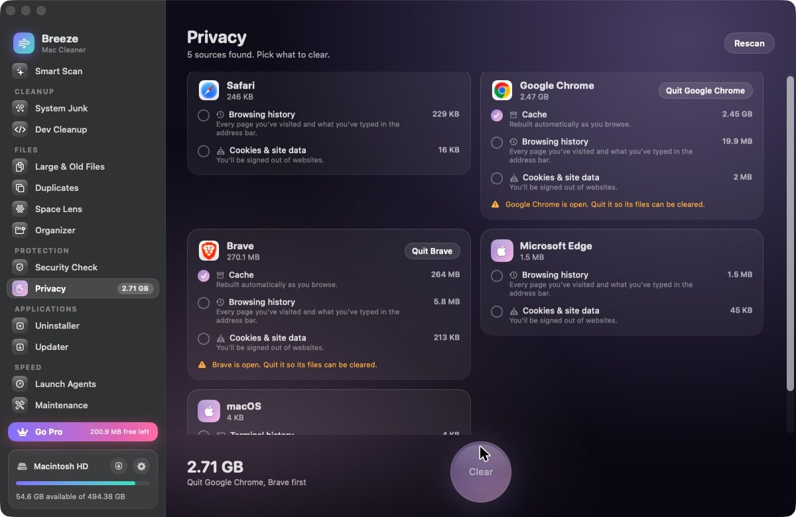

The Mac cleaner that knows what node_modules is.
Breeze finds caches, old Xcode builds, forgotten downloads and the files apps leave behind. It shows you exactly what each one is and clears it only when you say so. Native to macOS, fast, and careful by default.
Free for your first 1 GB of cleaning. Requires macOS 14 Sonoma or later.



Thirteen tools, organised the way you think about your Mac.
Every scan is free and read-only. Nothing changes on your Mac until you review the list and press Clean.
Cleanup
- Smart Scan checks junk, large files and unused apps in one pass.
- System Junk clears caches, logs, Xcode DerivedData, simulator caches and old archives.
- Dev Cleanup finds node_modules, Pods, Gradle and Flutter builds, Python venvs, Rust targets and more, and flags the ones you haven't touched in 30 days.
Files
- Large & Old Files surfaces the videos, disk images and archives taking up room.
- Duplicates compares file contents, not just names.
- Space Lens draws your disk as an animated orbit you can click into.
- Organizer sorts a messy folder by type or month, with undo.
Protection
- Security Check confirms Gatekeeper, FileVault, the firewall and XProtect are on, and flags unsigned apps and known adware.
- Privacy clears browser caches, history and cookies for Safari, Chrome, Brave, Edge, Arc, Vivaldi and Firefox.
Applications
- Uninstaller removes apps along with the preferences and caches they leave behind.
- Updater checks each app's own update feed, Homebrew and the App Store.
Speed
- Launch Agents lets you switch off the background helpers that start with your Mac.
- Maintenance runs the routine fixes: flush DNS, reindex Spotlight, thin Time Machine snapshots and more.
- Menu bar monitor and a warning when your disk runs low.
Careful with your files.
Cleaning tools earn trust slowly. Breeze is built so that a wrong click can't cost you anything important.
You approve every item
Scans only read. You see each file, its size and what it's for before anything is removed.
The Trash comes first
Documents, apps and duplicates go to the Trash, so you can put them back. Only rebuildable caches and logs are deleted outright.
System folders are off limits
A built-in guard refuses to touch macOS system folders, your Keychains, SSH keys or iCloud Drive, whatever a scan finds.
A history of every clean
Breeze logs what it removed and when, so you can always check what happened.
Try it free. Pay once if it helps.
No subscription and no account. Your license key is checked with Gumroad, and nothing else leaves your Mac.
Free
- Every scan and every tool
- Clean up to 1 GB in total
- Security Check, Updater and Maintenance with no limits
Breeze Pro
- Unlimited cleaning
- Use it on up to 3 of your Macs
- Free updates for all of version 1
- Email support from the developer
Questions
How do I activate Pro?
After you buy, Gumroad emails you a license key. Open Breeze, click Go Pro at the bottom of the sidebar, paste the key and click Activate. To move it to another Mac, click Deactivate in Settings first.
Why does Breeze ask for Full Disk Access?
macOS hides some caches, Safari data and Mail downloads from apps unless you allow it. Breeze works without it, but scans will miss those places. You can turn it on from the lock icon at the bottom of the sidebar.
Does Breeze collect any data?
No. There's no analytics or tracking. The only network requests are the license check with Gumroad and a daily check for a new version. Read the privacy policy.
Is Breeze signed and notarized by Apple?
Yes. Breeze is signed with a Developer ID and notarized by Apple, so it opens normally without security warnings.
Can I get a refund?
Yes. Email within 14 days of buying and you'll get a full refund through Gumroad.
Which Macs does it run on?
Any Mac with macOS 14 Sonoma or later, Apple silicon or Intel.